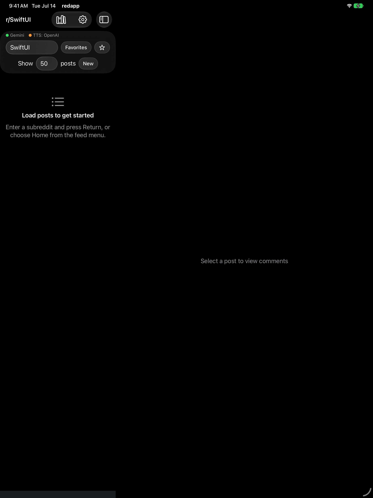
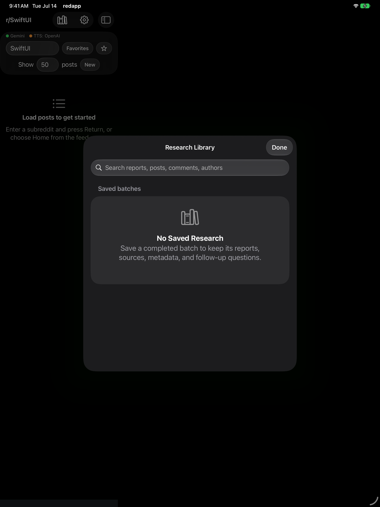
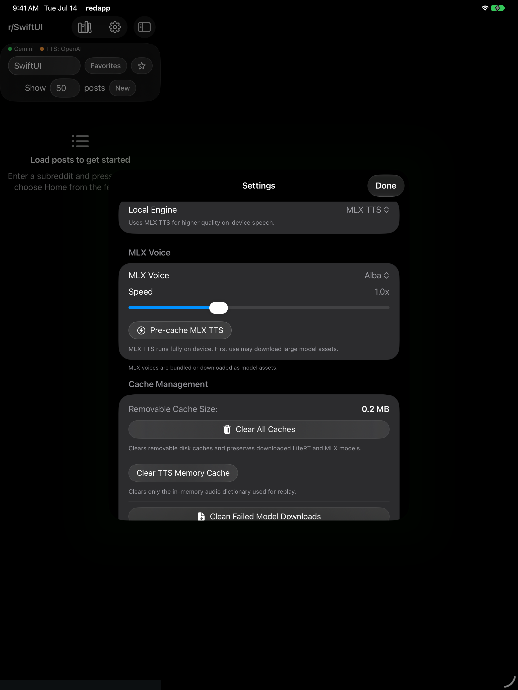
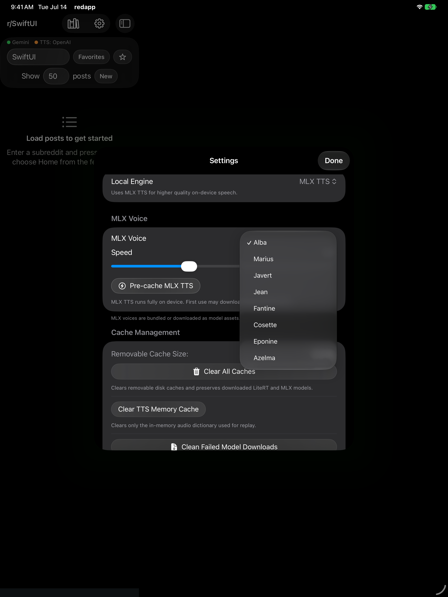
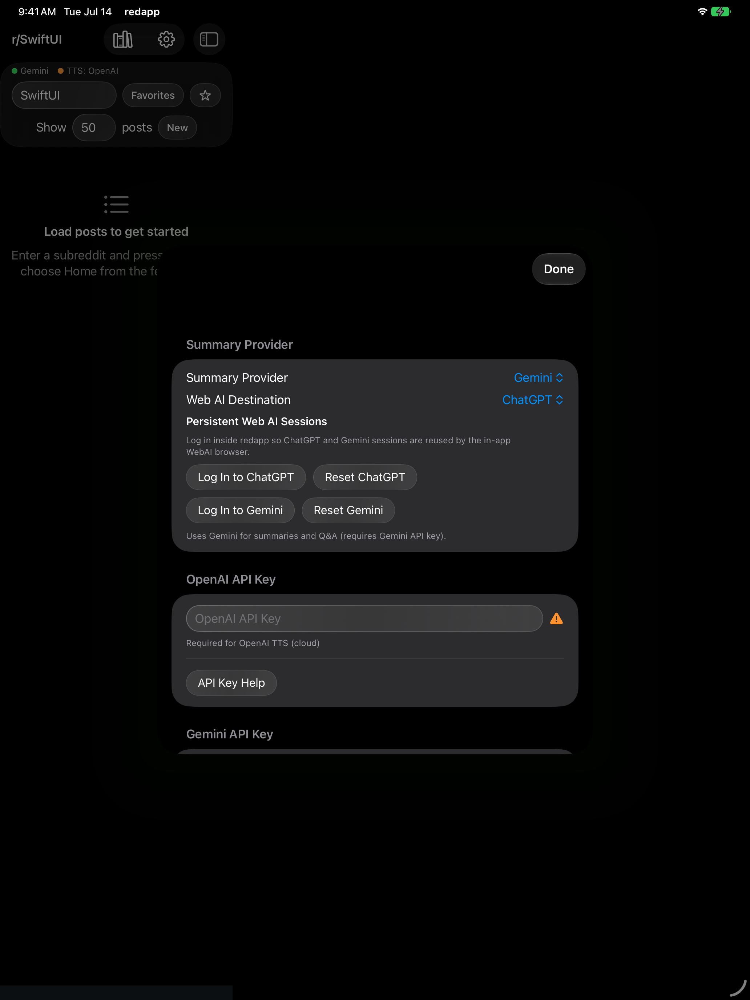
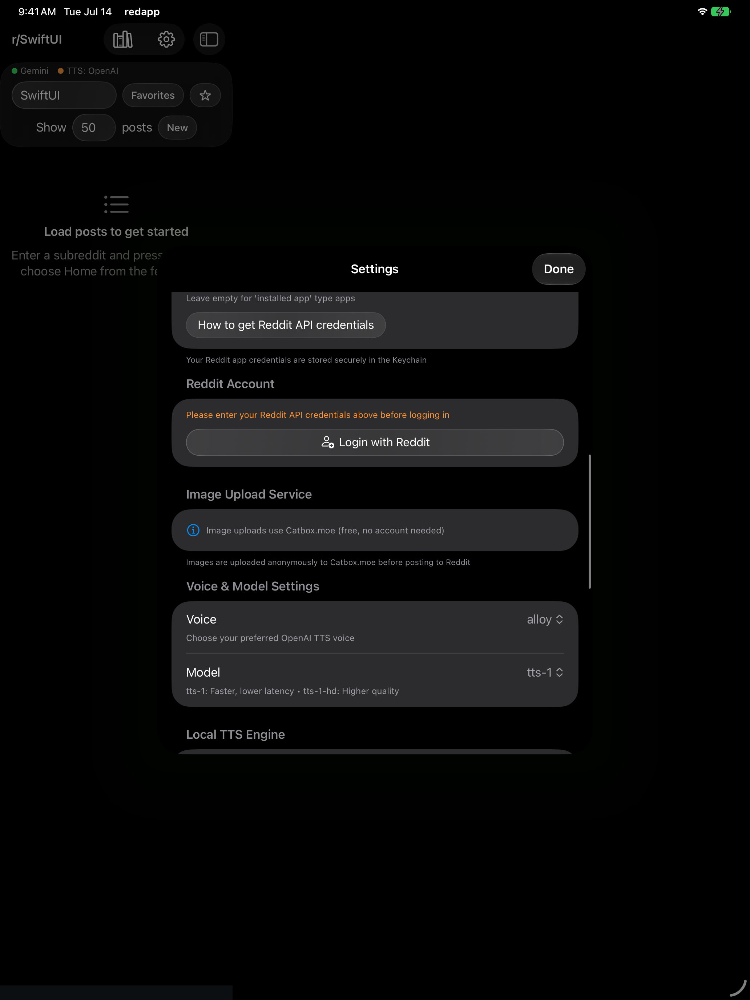

Reddit intelligence, reimagined
Turn noise into
knowledge.
redapp transforms community conversations into structured, verifiable research.
Discover
Explore Reddit
your way.
Focused discovery without losing the texture of the original community.

Analyze
Understand every
discussion.
Batch intelligence
From hundreds of voices
to one clear picture.
Select
Choose the feed, number of posts, and analysis depth.
Collect
Gather posts and complete comment conversations.
Synthesize
Find recurring themes, challenges, and community signals.
Understand
Receive a concise overview plus every supporting summary.
Communicate
See the signal
your way.
One research run. Multiple ways to understand and share it.
Subreddit overview
The complete story in a clear narrative.
Topics
Recurring themes grouped automatically.
Tables
Structured comparison and evidence.
Infographic
Copy or save a visual summary.
Whiteboard
A visual map of the conversation.
Evidence
Ask freely.
Verify instantly.
Direct experiencesupporting
Alternative resultconflict
Independent examplesupporting
Missing contextuncertain
Remember
Your research,
built to last.
Save the report, the sources, and the path that led to every conclusion.

New · On-device voice
Read less.
Hear more.
Turn summaries, answers, analyses, and comment threads into private, natural speech.


Actual app · MLX TTSon device
Flexible intelligence
Use the right model
for the moment.

Participate
Research the conversation.
Then join it.
redapp keeps the full community loop inside one focused workspace.
Vote & reply
Respond directly and attach supporting images.
Text posts
Write with lists and rich formatting.
Links & media
Share links, images, GIFs, and galleries.
Community context
Add flair and publish to the right audience.
Experience
Made for focus.
Built for Apple devices.

redapp
Browse less.
Understand more.
Discover it. Analyze it. Verify it. Save it. Share it. Hear it.
12 / 12